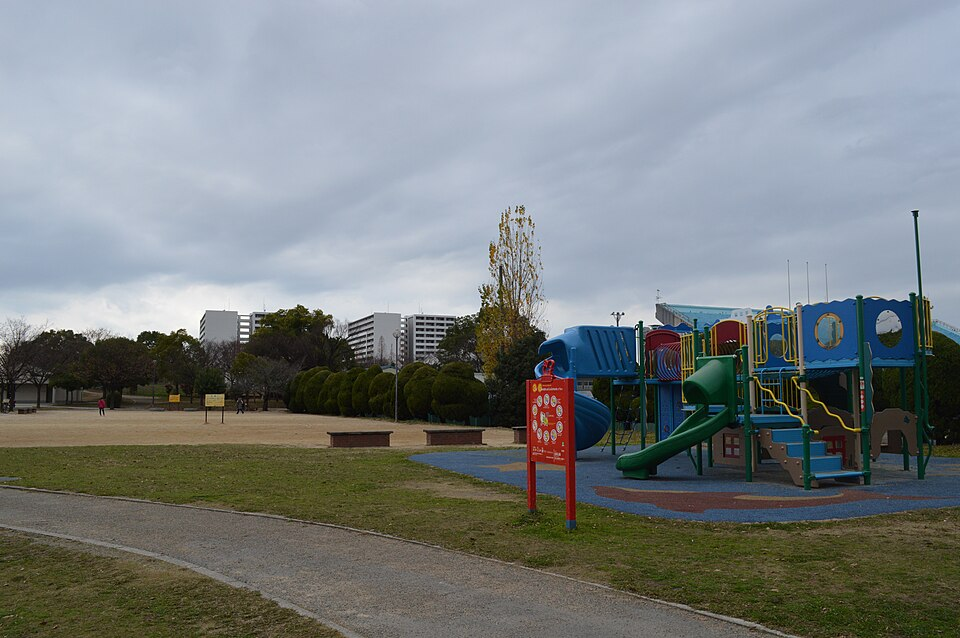

金岡公園
かなおかこうえん

堺市北区の運動公園（面積約17.7ha）
- ○ 遊具
- ○ トイレ
- ○ 駐車場
- ○ バリアフリー
設備の確認日：2026-11-23（確認方法：公式ページ・オープンデータ等の公開情報）
「未確認」は、設備が無いという意味ではありません。お出かけ前に公式情報をご確認ください。
基本情報
| 所在地 | 堺市北区 |
|---|---|
| 住所 | 堺市北区長曽根町1179-18 |
| 面積 | 約17.7ha（177,100㎡） |
| 種別 | 運動公園 |
| 管理 | 堺市 |
設備
| 遊具 | ○ あり | 市の「遊具のある公園」に掲載 |
|---|---|---|
| トイレ | ○ あり | 公園トイレあり（堺市の公園トイレ一覧、2025年6月時点）。一部のトイレは使用していない |
| 駐車場 | ○ あり | 南・北駐車場（有料。北は土日祝のみ）。料金は市の資料で確認 |
| 日陰 | ？ 未確認 | まだ確認できていません |
| ペット可 | ？ 未確認 | まだ確認できていません |
| 授乳室 | ？ 未確認 | まだ確認できていません |
| バリアフリー | ○ あり | 多目的トイレあり（堺市の公園トイレ一覧） |
地図
近くの公園
堺市北区の公園をもっと見る
この情報の出典
基本情報（名称・住所・位置・面積・種別）は、次のオープンデータを加工して作成しました（2026-11-23 取得）。
設備情報は、運営者が独自に確認したものです（確認日・確認方法は「設備」欄に記載）。
- 堺市 公園一覧（堺市）（CC BY 4.0）
設備情報は、運営者が独自に確認したものです（確認日・確認方法は「設備」欄に記載）。
掲載内容は確認日時点のものです。施設・料金・利用ルールは変わることがあります。お出かけ前に公式情報をご確認ください。誤りに気づかれた場合はこのサイトについてのお問い合わせフォームからお知らせください。